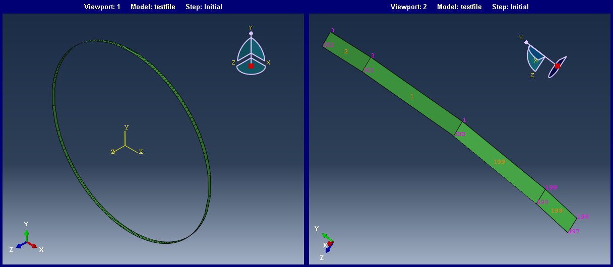

from __future__ import print_function, division # I'm using Python 2.7
import numpy as np
Contents
1. Outline of steps involved in mesh creation
In order to create a mesh, the first thing one would need is the nodal coordinates; Which represents the position of each node (x, y, z) in space. Then these nodes combine together to form an element, depending on the type of element number of nodes which make up the element would vary. For example line/beam element would only need two nodes to form an element, whereas a quadratic shell would require 4 and so on.
In this post, I've decided to create the mesh for a cylindrical shell, which is not a too complex shape but it'll provide an overview of what are all the steps one would require. Also Python 2.7 since Abaqus CLI (Command Line Interface) supports it.
2. Generating coordinates
Assume that the cylinder of radius \(2\pi\) is centered at origin \((0, 0)\). The coordinates of the cylinder would be nothing but the coordinates of a circle with increasing through depth/height coordinates, i.e., same \(x\) and \(y\) with changing \(z\) per element. Therefore \(x\) ranges from \(-\pi\) to \(+\pi\) and \(y\) would be \(\pm\sqrt{r^2 - x^2}\). Each \(x\) would have two \(y\) coordinates one on the positive side and the other on negative.
# Generate coordinates of circle.
circ = np.linspace(-np.pi, np.pi, 100) # x coords
circCoords = np.zeros((200, 2)) # temp circle array
y1 = np.sqrt(np.pi**2 - circ**2) # + y coords
y2 = -np.sqrt(np.pi**2 - circ**2) # - y coords
# First 100 columns are y1 and next is y2, since the coords has to be continous,
# x, y for second 100 has to be reversed.
circCoords[:100, 0], circCoords[100:, 0] = circ, circ[::-1] # Replace 1st row (x)
circCoords[:100, 1], circCoords[100:, 1] = y1, y2[::-1] # replace 2nd row (y)
# np.savetxt("circleCoords.dat", circCoords, fmt="%0.4f\t%0.4f")
3. Nodes and Mesh
3.1. First set of Nodes and lines
- The nodal numbers (keys) has to start from 1 in order for Abaqus to be able to read.
- The last node should be connected with the first node in order to complete the circle's line element. So the first line element can be made by combining nodes 1 and 2 \([(-3.14, 0.0, 0.0), (-3.0781, 0.6283, 0.0)]\). The nodes and line element dictionary would look like,
nodalCoords = {1:[-3.14, 0.0, 0.0], 2:[-3.0781, 0.6283, 0.0]}
lineElementDefs = {1:[1, 2]}
One way of doing the above steps with relative ease is by combining arbitary integers (keys) range(1, no_of_coordinates) with coordinates (values) array read with np.loadtxt(). Something like,
coords = np.loadtxt("circleCoords.dat", dtype=float)
lastNode = coords.shape[0]
nodes_keys = range(1, lastNode + 1) # 0 is not a valid node number
nodalCoords = dict(zip(nodes_keys, coords))
But, dict comprehension should be used with little caution! Even if the size of node_keys, leElems_vals are different this would silently trim it.
globalCoords, globalLe, globalElem = {}, {}, {}
lastNode = circCoords.shape[0]
coords_init = np.zeros((lastNode, 3))
coords_init[:, :-1] = circCoords # Replace the 1 & 2 columns with x and y
# Nodes dictionary
nodes_keys = range(1, lastNode + 1)
nodalCoords = dict(zip(nodes_keys, coords_init))
# Line element dictionary
leElems_vals = np.zeros((lastNode, 2), dtype=int)
leElems_vals[:-1, 0], leElems_vals[:-1, 1] = nodes_keys[:-1], nodes_keys[1:]
leElems_vals[-1] = [lastNode , 1]
lineElems_i = dict(zip(nodes_keys, leElems_vals))
# Update to the global variables
globalCoords.update(nodalCoords) # Add these nodal to the global coords dict
globalLe[1] = lineElems_i
3.2 Line elements along cylinder height
- The depth, i.e., should be changed to the required dimensions.
- This set of coordinates should have different nodal numbers from the previous set. It can be done by simply adding a jump to the number of keys from the last set. Abaqus/CAE has no issues with this.
newNodalCoords = {101:[-3.14, 0.0, depth], 102:[-3.0781, 0.6283, depth]}
newLineElementDefs = {101:[101, 102]}
def nextLineElem(nodalCoords, depth, initialCoords, jump=100):
# coordinates for jth line element
newNN = max(nodalCoords.keys()) + jump # new node number/key
lastNode_j = newNN + initialCoords.shape[0]
newCoords_j = np.copy(initialCoords)
newCoords_j[:, 2] = depth
keys_j = range(newNN + 1, lastNode_j + 1)
nodalCoords_j = dict(zip(keys_j, newCoords_j))
# line elements for jth line mesh.
leElems_vals_j = np.zeros((newCoords_j.shape[0], 2), dtype=int)
leElems_vals_j[:-1, 0], leElems_vals_j[:-1, 1] = keys_j[:-1], keys_j[1:]
leElems_vals_j[-1] = [lastNode_j, newNN + 1]
lineElems_j = dict(zip(keys_j, leElems_vals_j))
return (nodalCoords_j, lineElems_j)
for i in range(2, 3): # Now we'll create only one more line element
jump, depth = 100, 0.1
tmp_nodalCoords, tmp_le = nextLineElem(nodalCoords, depth, coords_init, jump)
globalCoords.update(tmp_nodalCoords)
globalLe[i] = tmp_le
3.3 Combining line elements to form Mesh
Now we can create rectangular shell mesh using the line elements formed above by combining two consecutive line elements. Since a line element is formed between two nodes (node numbers), combining two consecutive line elements will form a four-noded element (2-D).
elementDefs = {} # Global element dictionary
le_i = globalLe[lineElems[0]] # Line element dictionary 1
le_j = globalLe[lineElems[1]] # Line element dictionary 2
# Combine the line element nodes
elementDefs[elemNum_i] = [le_i[0], le_i[1], le_i[1], le_i[0]]
lineElems = sorted(globalLe.keys())
le_i = globalLe[lineElems[0]] # line element 1
le_j = globalLe[lineElems[1]] # line element 2
le_i_keys = sorted(le_i.keys())
le_j_keys = sorted(le_j.keys())
# Form arrays of line elements and their nodal connectivity
tmp_le_iArray = np.array([le_i[key_i] for key_i in le_i_keys] , dtype=int)
tmp_le_jArray = np.array([le_j[key_j] for key_j in le_j_keys] , dtype=int)
tmpMeshArray = np.zeros((tmp_le_iArray.shape[0], 4), dtype=int)
tmpMeshArray[:, :2] = tmp_le_iArray
tmpMeshArray[:, 2], tmpMeshArray[:, 3] = tmp_le_jArray[:, 1], tmp_le_jArray[:, 0]
elemKeys = range(min(le_i_keys), min(le_i_keys) + tmp_le_iArray.shape[0] + 1)
elemSet_i = dict(zip(elemKeys, tmpMeshArray))
globalElem.update(elemSet_i)
4. Writing Node and Element details in Abaqus format
Now we can put everything together in Abaqus format for visualising what we've created! Aside from the requisites mentioned above, there are few more for writing Abaqus input file (*.inp).
- Any line that starts with double asterisks (**) are treated as comments and single asterisk as Keywords. Some keywords will have the required parameter(s) and some may not. For example *ELEMENT keyword must have TYPE in order to determine the type of the element.
- Nodal coordinates block should start with *NODE keyword, with one node per line as <node number>, <x_1>, <x_2>, <x_3>. These coordinates data can be a mixture of integer, floating point, or alphanumeric values and separated by commas.
- Similarly Elements block as *ELEMENT, TYPE, followed by data lines of <Element number>, <Nodal connectivity> separated by commas.
Function to write comments/headers before each blocks
def header(outFile, commentLine, keywordLine):
"""Writes header on file object
outFile, file object: already opened file object to write
commentLine, str: string which goes in as comment
keywordLine, str: keyword line with parameters (if required)
Examples
header(testfile, "Nodal Coordinates", "NODE")
header(testfile, "Elements", "ELEMENT, TYPE=S4")
"""
outFile.write("**\n")
outFile.write("%s\n" %("*"*(len(commentLine) + 3)))
outFile.write("** %s\n" %(commentLine))
outFile.write("%s\n" %("*"*(len(commentLine) + 3)))
outFile.write("*%s\n" %(keywordLine))
Functions to write node and elements
def writeNodeLine(outFile, nodeNumber, coords):
"""Writes the nodal coordinates line in Abq format, doesnt return anything
outFile, file object: already opened file object to write
nodeNumber, int: node number
coords, list of float: list of coordinates of current node(<x1>,<x2>,<x3>)
"""
outFile.write("%d, \t%0.5f, \t%0.5f, \t%0.5f\n" %(nodeNumber, coords[0],
coords[1], coords[2]))
# Similarly for Element definition
def writeElemLine(outFile, elemNumber, nodalCnvty):
"""Writes the Element line in Abq format, doesnt return anything; This is
valid only for 4 noded shell elements.
outFile, file object: already opened file object to write
elemNumber, int: Element number
nodalCnvty, list of int: Nodal connectivity of current element (<node1>,
<node2>, <node3>, <node4>)
"""
outFile.write("%d, \t%d, \t%d, \t%d, \t%d\n" %(elemNumber, \
nodalCnvty[0], nodalCnvty[1], nodalCnvty[2], nodalCnvty[3]))
with open("testfile.inp", "w") as inp:
header(inp, "Nodal Coordinates", "NODE") # Write node header
# write nodes
for node_i in sorted(globalCoords.keys()):
writeNodeLine(inp, node_i, globalCoords[node_i])
inp.write("\n")
header(inp, "Elements", "ELEMENT, TYPE=S4") # Write Element header
for elem_i in sorted(elemSet_i.keys()):
writeElemLine(inp, elem_i, elemSet_i[elem_i])
5. Output
Once the testfile.inp is created, we can import this file into Abaqus. Start Abaqus, while importing select Abaqus Input File (*.inp, *.pes) in File Filter.
6. Few comments
Regarding coding style
It's considered bad practice when the same lines of code are repeated, instead it could be done much more efficiently replacing by functions. For example, when the mesh is created from line elements. Also instead of dictionary type for storing node, line element and element information, we can use numpy arrays with the first column as keys of nodes/elements.
Regarding Mesh
As the object/part gets complicated it would be much harder to do it, which could be done effectively using Abaqus/CAE GUI itself. The above approach is more intended for applications involving the use Abaqus solver programmatically without modelling the section's every time. For example, BECAS uses the similar approach to model wind turbine cross-sections; In fact, I learned this from their source code. I would like to extend my thanks for making it freely accessible to the academic users.
Foot notes
- Refer to Abaqus documentation 6.14, Getting started with Keywords edition for more info.
- Abaqus 6.14-1 uses Python 2.7.3, Numpy 1.6.2. If the system python's version is greater, it's important to keep an eye on compatibility when something is not working as expected.
Thanks to Dhivya Sundar for her suggestions and proof reading!!